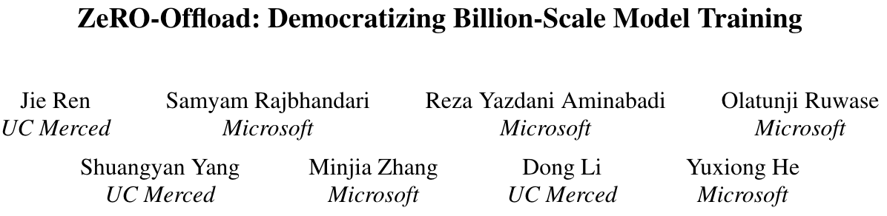
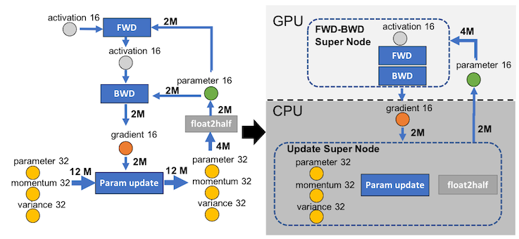
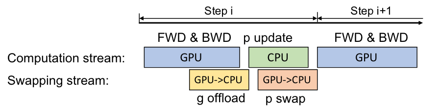
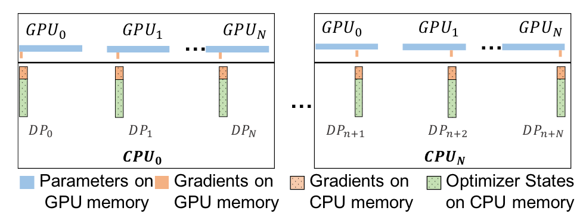
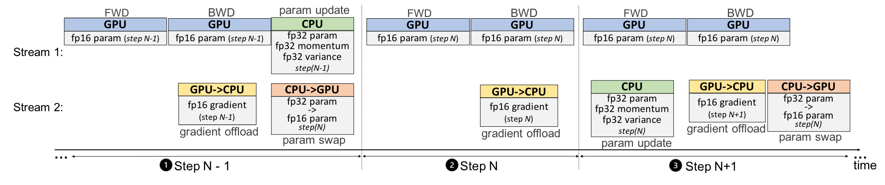

ZeRO-Offload: Democratizing Billion-Scale Model Training¶
Abstract

-
Paper: ZeRO-Offload: Democratizing Billion-Scale Model Training
-
ATC'21: Proceedings of the Annual Technical Conference
介绍¶
摘要¶
ZeRO-Offload 期望降低大模型训练的成本，使得仅有有限 GPU 资源的研究者也可以进行大模型的训练。摘要中提到 ZeRO-Offload：
- 可以单卡训练 13B 参数的模型
- 将一部分数据与运算卸载到 CPU 上进行
- 在单张 NVIDIA V100 GPU 上达到 40 TFlops
- 可以支持多卡训练，实验表明在使用至多 128 张 GPU 训练时达到了接近线性的性能提升
引言与背景¶
大模型训练中内存开销来自于模型状态（参数、梯度、优化器状态）以及残余状态（激活值、临时 buffer 及内存碎片等），其中模型状态是大模型训练最主要的内存瓶颈。
内存开销
使用一个混合精度训练以及 Adam 优化器的训练框架，训练 \(M\) 个参数的模型，至少需要 \(16 \times M\) 字节的内存来存储模型状态：
- 混合精度训练
- 保存两份参数，其中一份使用 fp16 存储、一份使用 fp32 存储，fp16 用来参与运算以提高运算速度，fp32 用来进行更新以避免 fp16 在累积过程中的精度不足问题，此处需要 6 字节
- 梯度参与运算，使用 fp16 保存，此处需要 2 字节
- Adam 优化器
- 梯度的动量与方差，使用 fp32 保存，此处需要 8 字节
现有工作从两个角度出发拓宽大模型训练时的内存限制：scale-out 与 scale-up。
scale-out 即聚合多片 GPU 的显存共同完成训练，如流水线并行、模型并行以及 ZeRO 驱动的数据并行方式，流水线并行与模型并行分别对模型以及残余状态进行了横向（分层）切割或纵向（多层的一部分）切割；ZeRO 则将训练 batch 和模型同时拆分到不同 GPU 上，使用 GPU 间的通信开销来交换每片 GPU 上的显存占用。可以发现 scale-out 的方法并不能减少对显存的总需求量，导致需要大量 GPU 资源才能完成大模型的训练任务。
scale-up 的方法主要通过三种途径降低对显存的需求：(1) 增加运算开销而减少激活值的存储数量，如 checkpoint 技术；(2) 使用低精度或混合精度训练，减少模型状态和激活值的显存开销；(3) 将一部分显存卸载到 CPU 内存上，但是现有工作主要使用了 CPU 内存本身，而没有充分利用 CPU 的运算能力来减少数据搬运的开销。
ZeRO-Offload 的设计希望可以做到：
- Efficiency: 最优的计算与数据分割，使得 CPU 和 GPU 上有合理的负载分配
- Scalability: 将卸载策略与模型并行以及 ZeRO 驱动的数据并行结合
- Usability: 不需要对模型进行重新设计和手工分割，在 DeepSpeed 中直接可用
最优卸载策略¶
不同模型拆分到 CPU 与 GPU 的方法主要是在权衡 CPU 运算以及 CPU-GPU 通信的开销，两者都有可能成为系统瓶颈。作者认为最优的卸载策略应该满足：
- CPU 上的运算量应比 GPU 上的运算量的数量级更低，因为 CPU 的运算效率更低，如果 CPU 与 GPU 的运算量相近，CPU 的运算将成为瓶颈
- 最少的 CPU-GPU 通信开销
- 保证前两个需求的前提下，尽可能最大化地将显存内容转移到 CPU 内存中
为了获得最优卸载策略，作者将训练过程根据数据流动简化成了下图。左侧展示了 GPU 上进行混合精度训练时各种模型状态、残余状态的数据流动，箭头上的数值（如 \(2M\)）表示不同过程间需要传输的数据量。

如何保证 CPU 上的运算量有更低的数量级：训练中每一次迭代的复杂度为 \(O(MB)\)，其中 \(M\) 为模型大小、\(B\) 为训练 batch 大小。训练中前向与反向传播均为复杂度 \(O(MB)\) 的运算，需要在 GPU 上完成；归一运算与参数更新的复杂度为 \(O(M)\) 因此可以卸载到 CPU 上进行。如图右侧，将前向/反向传播组合为一个 Super Nodes 放置在 GPU 上进行，而参数更新则放置在 CPU 上进行。
如何保证最少的 CPU-GPU 通信开销：在上述设计的基础上，可以调整的是参数/梯度/优化器状态的放置位置，可以发现最少的开销情况是仅进行 fp16 的梯度与参数通信，即 \(4M\) 的通信量（fp16 的梯度与参数各 \(2M\)）。这要求我们将 fp32 的参数、优化器状态都放置在 CPU 内存中，同时可以降低尽可能多的显存使用；同时需要将 fp16 的参数放置在 GPU 上来避免 fp16 的参数的 \(4M\) 通信代价。
在上述设计的基础上，还可以调整 fp16 的梯度放置位置，依照尽可能多地降低显存压力的设计需求，将 fp16 的梯度放置在 CPU 内存中。
至此，获得了图中右侧的最佳卸载策略。GPU 负责前向与反向传播，保存了所有的激活值以及 fp16 的参数参与运算；CPU 负责进行参数更新以及从 fp32 到 fp16 的精度转变，保存了所有的 fp32 数据如参数、优化器状态（动量、方差）以及 fp16 的梯度值。
ZeRO-Offload 训练¶
单卡训练¶
在一张 GPU 上的每轮训练：
- 从正向传播(FWD)开始，因为正向传播需要的 fp16 参数（下称p16）已经在 GPU 上，这一步不需要 GPU-CPU 通信
- 反向传播(BWD)过程中使用少量的临时 buffer 即可存放计算得到的 fp16 梯度（下称 g16），计算过程中每得到一个（或一组）梯度的最终值就可以传到 CPU 中，因此 g16 的卸载几乎与 BWD 重合
- 在反向传播后，GPU 陷入等待，CPU 开始进行参数及优化器状态的更新，每获得一个更新的 fp32 参数（下称 p32）即将其对应的 p16 值传到 GPU 中，因此 p16 的上载几乎与 CPU 参数更新重合
- 参数更新结束后，CPU 陷入等待，GPU 开启新的一轮 FWD&BWD

图
图中作者把 CPU 和 GPU 的运算合并为 Computation Stream，直接看图的话容易忽略 GPU 的等待；图中 p swap 似乎是笔误，应为 CPU->GPU ？
多卡训练¶
ZeRO-Offload 使用基于 ZeRO 的数据并行使得训练拓展到多卡，关于 ZeRO 更详细的介绍可以查看 HobbitQia 的 ZeRO 笔记。
ZeRO
ZeRO 发表在 SC'20 会议，简单来说 ZeRO 的思想就是将训练过程中的各类内容，如模型参数、梯度、优化器状态、激活值等，拆分到不同 GPU 中，使用 GPU 间的通信开销来代替每张 GPU 的显存开销，它根据拆分的内容分成了以下几个版本：
- ZeRO-1: 对优化器状态进行分割
- ZeRO-2: 对优化器状态、梯度进行分割
- ZeRO-3: 对优化器状态、梯度、参数进行分割
ZeRO-Offload 使用了 ZeRO-2 策略，即将优化器状态、梯度拆分到每张 GPU 上保存和更新，并将拆分后的优化器状态、梯度及对应参数卸载到 对应 CPU 上负责参数更新。可以发现由于参数更新只需要使用节点负责的部分梯度数据，因此 GPU-CPU 通信的总开销并没有发生变化，仅增加了 GPU 之间的通信开销。同时，由于 CPU 的数量也会随着节点数量线性增长，并不会在 CPU 上产生新的运算瓶颈。

CPU 上的运算优化¶
CPU 上的优化器优化¶
本文提到自己的一个贡献是充分使用了 CPU 的运算能力，也使用 SIMD 指令、Loop Unrolling、OMP 多线程等方法优化了 CPU 的运算，提高了 CPU 上优化器参与参数更新的效率。这部分并不是方法上的创新，具体细节不再赘述。
延迟一步参数更新¶
One-Step Delayed Parameter Update（下称 DPU）是本文个人最不理解的设计点。设计初衷很好理解：CPU 的运算能力远弱于 GPU，有可能出现 GPU 完成运算并空置等待 CPU 运算的情况，为了解决这个问题，作者设计了 DPU 来实际上跳过一步参数更新过程，以此缓解 CPU 的运算压力。DPU 的训练过程如下所述：
- 照常进行 \(N-1\) 次迭代（包括前向、反向、参数更新等）
- 在第 \(N\) 次迭代时，GPU 完成梯度运算，并将梯度传输给 CPU，但跳过这一步的 CPU 参数更新
- 在第 \(N+1\) 次迭代时，CPU 使用第 \(N\) 次迭代获得的梯度更新参数，同时 GPU 使用旧的参数进行一次前向、反向传播
- 从第 \(N+1\) 次迭代开始，GPU 使用的参数都是两轮前的参数而非上一轮应该更新的参数

训练语义的改变
一个很明显的问题是，使用 DPU 策略后训练的过程被改变了，这是否会影响训练的收敛以及模型精度？
作者给出的解释是，在进行过一段时间的训练之后才使用 DPU 策略，而不在训练的一开始就使用，可以避免在训练初期参数更新幅度较大时影响训练收敛。同时，作者通过实验证明引入 DPU 策略并没有过大影响模型精度。
实验¶
- 实验环境：DGX-2 节点（使用 1 个节点测试吞吐，8 个节点测试模型大小扩展性与吞吐）
- 16 NVIDIA Tesla V100 Tensor Core GPUs, 32GB HBM2 on each GPU
- 2 Intel Xeon Platinum 8168 Processors, 1.5TB DDR4, 32K L1 cache, 1M L2 cache, 33M L3 cache
- bidirectional 32GBps PCIe
- 任务：GPT-2 等基于 Transformer 的模型；使用 GPT-2、BERT 等测试 DPU 策略的收敛与模型精度
结论¶
ZeRO-Offload 把训练过程简化后进行设计，确定将哪些数据卸载到 CPU 中，以此充分利用 CPU 的内存空间与运算能力。但是很显然在正常训练过程（非 DPU 过程内）中 GPU 需要一直等待 CPU 的参数更新结果才能开始新一轮训练，这段空置时间无法被简单流水掉，个人认为会限制整体训练效率。
创建日期: 2024年12月9日 21:49:49